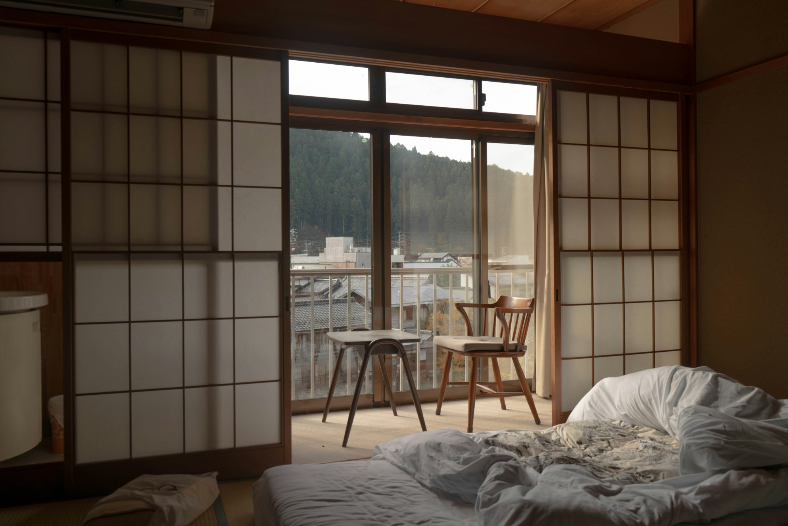

Not ready? Book a call
Real estate for a different kind of life
Local expertise. Clear answers. A smoother way to own property in Japan.
Find your dream home
.nav-desktop goes display:none and drops out of the grid entirely, so implicit auto-placement slid .header-actions into the vacated centre track — the burger sat off-centre instead of flush against the right edge. Each header child now gets an explicit grid-column, so the burger stays far-right regardless of which siblings are hidden.#0D0D0D) two-column composition — an oversized three-line headline on the left (~60% width), a single cropped landscape image on the right (~35%), with deliberate negative space around it rather than a background that fills the frame.#DFFF00). Used only for the eyebrow rule, the primary hero CTA, hover states and the active-nav underline — never as a background or a dominant colour.#F5F1E8). Across the nav, headline and copy, for a softer, editorial-print feel in place of stark white-on-black.1.4fr/1fr to 1.15fr/1fr — imagery now carries close to 45% of the hero's visual weight, up from roughly 25%.6.4vw/max 5.75rem to 5.6vw/max 5rem — enough that "BUY JAPAN." still holds one line. The copy, CTA and structure are untouched.Niseko, Tokyo and Hokkaido caption the anchor, Shibuya and snowy-village cards; the interior and lifestyle-detail cards stay unlabelled, so the tags read as occasional captions rather than a chip on every corner.prefers-reduced-motion./start#faq instead of the top of checkout. The tel: link matches the displayed number (the old footer dialled a different one).Keyboard: Tab through, Enter or Space to open a dropdown, Esc to close. Focus returns to the trigger on close.